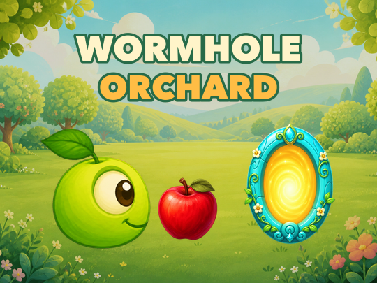

Wormhole Orchard Roku puzzle gameWormhole Orchard legal
Privacy Policy
Effective date: August 19, 2026
This Privacy Policy explains how Wormhole Orchard handles information when you play the game on a Roku device.
Wormhole Orchard is an offline game. It does not require an account and does not send your game progress to us.
Information We Collect
Wormhole Orchard does not collect, transmit, sell, or share personal information. The game does not require an account and does not include advertising, analytics, telemetry, or third-party tracking software.
Game Data Stored on Your Device
Wormhole Orchard stores a small amount of game data in the Roku device registry so your progress and preferences are available the next time you play. This local data may include:
- Completed levels and unlocked levels
- Your last played level
- Music and sound-effect settings
- Tutorial prompts you have completed
This data remains on your Roku device and is not transmitted to us or to third parties by Wormhole Orchard.
QR Codes and Third-Party Services
The game may display static QR codes that can open Google Play or the Apple App Store on a separate mobile device. Wormhole Orchard does not receive information when you scan these codes. Any interaction with those stores or an app reached through them is governed by that service's own privacy policy.
Data Sharing
Because Wormhole Orchard does not collect personal information or transmit game data, we do not sell, rent, or share user data with advertisers, data brokers, or other third parties.
Data Retention and Deletion
Local game data remains on the Roku device until you use the game's Reset Progress option or it is removed through the Roku platform. Uninstalling the game or resetting the device may also remove local data. Reinstalling the game may begin with a new save depending on the Roku device and account configuration.
Children's Privacy
Wormhole Orchard does not knowingly collect personal information from children or from any other users.
Roku Platform Services
Roku may process platform-level information under Roku's own privacy policy and terms. That processing is controlled by Roku and is separate from Wormhole Orchard.
Changes to This Policy
We may update this Privacy Policy if the game's features or data practices change. The effective date at the top of this page identifies the latest version.
Contact
Questions about this Privacy Policy may be directed to the publisher contact listed on Wormhole Orchard's Roku Streaming Store page.